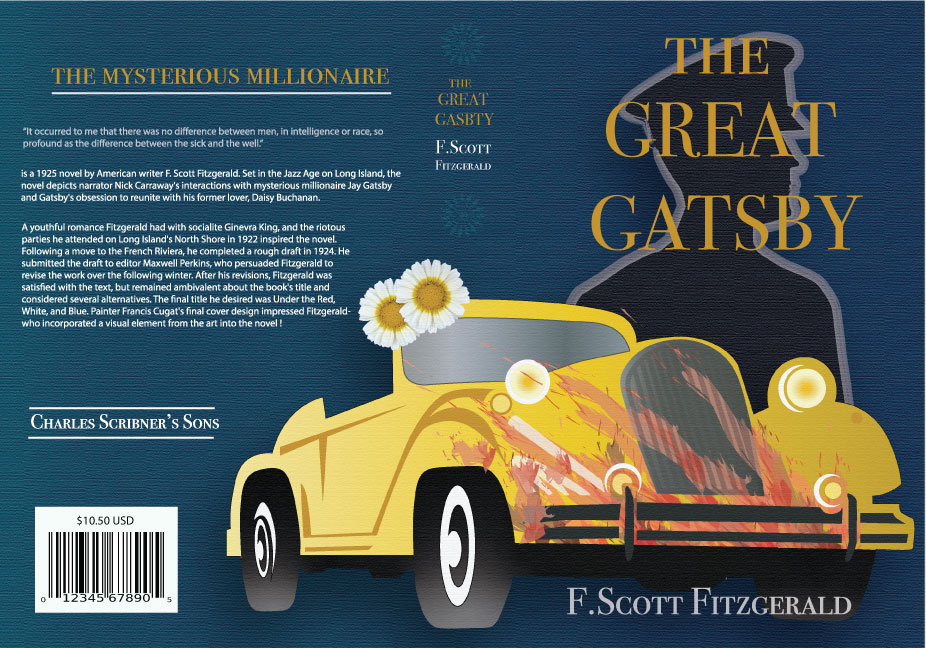

Brief Description
-
I’m Jennifer Turbin, currently part of F.I.R.S.T Institute’s
Graphic Design and Web development program. I inspires to be an
exceptional graphic designer with my own business.One of my passions
is to create art, that I can share with the world. Some of my hobbies
are to be out in nature whether it being hiking, swimming, and camping.
Art has always been a big part of life, I am always looking for inspiration
to create digital art and implement my UX/UI Design, Digital Illustration
and Web design and development skills.
skills

- Photoshop
- Illustrator
- Web Development
- UX/UI Design
- Digital Photography
- Logo Design
- Character Design
- Problem-solving Abilities
- High-energy Attitude
- Outgoing
- Detailed Oriented
- Bilingual
- Organize
- Time Management Abilities